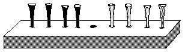
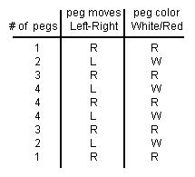

Katie finds a pattern in the Peg Game

I was moving the pegs according to the rules- see ch. 6 (dark are Red, others white ), and I found a pattern. I made the table below to show the pattern. The first line means 1 peg moves to the Right and is Red. The second line means 2 white pegs move to the Left, and so on.
